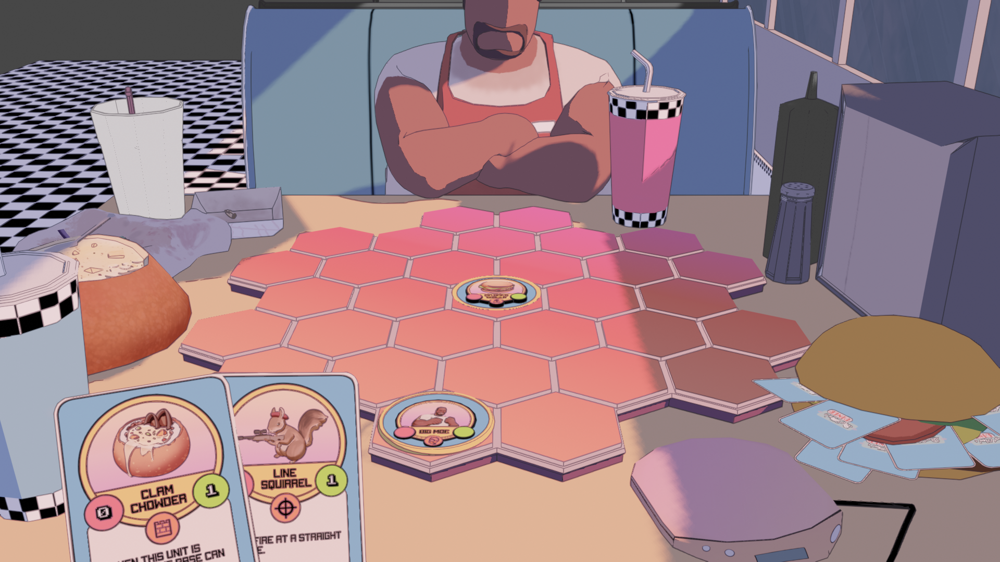

Moe's Diner Duel
itch.io page

Made by a team of five in Godot 4 during three weeks for the Bigmode Game Jam 2023.
This was a really fun project to work on as much as it was stressful for me individually. I was the programmer and game designer on the project which made me the bottleneck for implementation. Much of my work on the code is a blur, but I distinctly remember spending much the last 11 hours creating the shader for the 3D assets. I've made many shaders before and I had an exact idea of how I wanted the 3D to work. Not only did I need to make the shader, but I needed to bake the textures in Blender and assign them to each asset (since the project would only contain static assets).
It was my first time working with strangers, and it was really motivating to see such talented people come together. The artists were amazing and the sound designer had such a natural intuition.
The game itself is ultimately incomplete and contains bugs, but I still look fondly back on the aesthetic and the memories of working on the project.
This project came after my longest hiatus from game development. I began when I was 17 and my longest break beforehand was a month or two. But in 2023 I spent much of the year away from games, focusing on school and work. I had lost all passion for making games until this project came along.